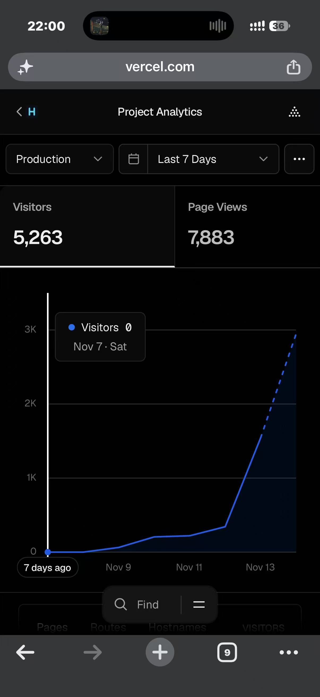
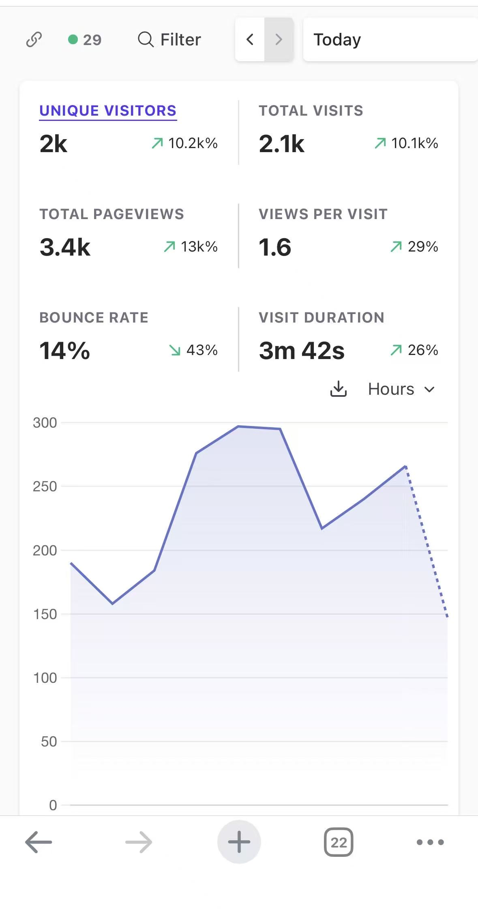

2026 年 11 月 14 日晚的群聊里，三拨人聊的是同一件事：新词站怎么才能真正吃到流量。有人上了四个站流量起不来，有人靠一个词在 Google 排到官网前面，有人用新词内页几小时进首页、一天拿到主词十倍的流量。
上了四个站，卡在需求上
不知所以说自己已经上了 4 个站，曝光每天都在增加、点击率也有一点，但流量不高，「我琢磨是需求没选对」。于雷接话：挖新词真是个技术活，目前还不得要领。
Y.：Google 搜这个词排第一，第二名是官网
Y. 贴出 Vercel 的项目分析截图：最近 7 天 5,263 访客、7,883 页面浏览，曲线从 11 月 13 日起陡然拉起。他说这个站是前天上线的，Google 搜这个词他排第一，第二名才是官方网站。

玩法说得很直接：游戏资讯页嵌入小游戏，「吃满新词流量同时保证用户留存拉大广告曝光」。词从哪来？他的回答是「答案全都在新词服务里」。
Alex 认为这个开局值得继续放大：深挖游戏内容做内容页，加 paywall，「这么好的开局，不能放过」。Y. 回了一句「深挖一下」。
Wesley Z：新词内页几小时上首页，一天 2000
哥飞转发来另一段聊天记录。Wesley Z 的游戏站给一个新词做了内页，几个小时就做到首页；当天的统计是独立访客 2k、总访问 2.1k、总浏览量 3.4k，每次访问浏览 1.6 页，跳出率 14%，停留 3 分 42 秒。

他说这个内页的流量比主词还高，「主词才 200 一天」；群里有人接了一句，2000 是主词的 10 倍。Wesley 的解释是：主词量大但不好抢了，过了一个月了；新词大家上的也很快，还是要把内容做到最好才能靠前。
另一位群友跟着印证：之前让 Claude 给他上了几个词没啥流量，还是需要把内容质量提上去才行。
这轮聊天里能带走的
- 需求没选对，多上几个站也不会有流量：曝光和点击率都在涨、量却起不来时，先回头看词，而不是继续加站。
- 新词窗口很短：主词过一个月就不好抢，新词也是一上架就挤满人，速度之外最终拼内容质量。
- 内页可以比主站主词吃到更多新词流量：Wesley 的新词内页一天 2,000，主词只有 200；Y. 用新词直接排到官网前面。
- 站内玩法可以叠加：Y. 的做法是游戏资讯页嵌入小游戏，吃新词流量的同时用留存撑广告曝光；Alex 建议继续做内容页并加 paywall。
原始对话
2026 年 11 月 14 日晚的群聊，原始记录共 25 条，按时间顺序全部保留；其中哥飞转发的一段聊天记录已按原时间展开，转发占位保留，表情标记已去掉。